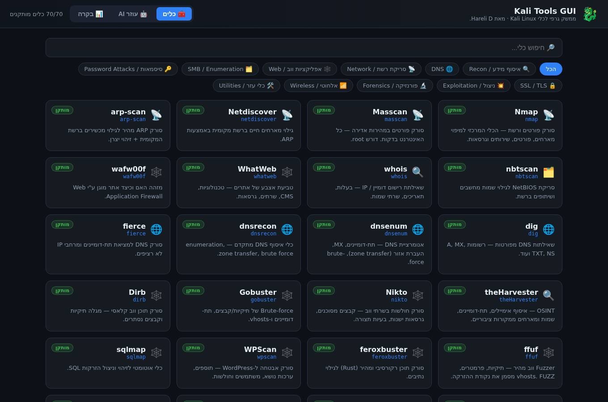
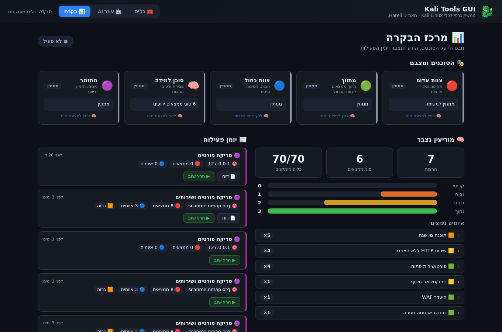
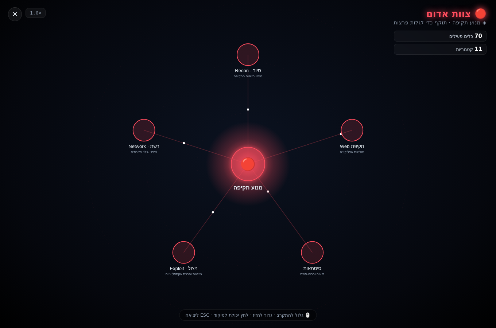

מסמך זה מתאר את התכן ההנדסי של מערכת Kali Tools GUI: ממשק גרפי ושכבת סוכנים בגישת Purple Team המורצת מעל כלי Kali Linux תחת WSL2. המסמך נועד להסביר כיצד המערכת בנויה, כיצד רכיביה משתלבים, ובמיוחד — מאיפה הסוכנים "יודעים" לפעול ולקבל נתונים.
איור 1 — שכבות המערכת וזרימת הבקרה.
שרת HTTP רב‑תהליכי (ThreadingHTTPServer) בספריית פייתון הסטנדרטית. מגיש את קבצי ה‑Frontend וחושף API ב‑JSON.
כל הרצת כלי היא אובייקט Job: מריץ subprocess.Popen בקבוצת תהליכים נפרדת, קורא פלט
בתהליכון (thread) עם מגבלת גודל, ומאפשר עצירה נקייה. הפלט זמין ל‑polling מהדפדפן.
| נקודת קצה | תפקיד |
|---|---|
GET /api/tools | קטלוג הכלים + סטטוס התקנה |
POST /api/run | הרצת כלי בודד |
POST /api/plan | Planner: כוונה+מטרה → תוכנית שלבים |
POST /api/mission | הרצת משימה (Executor+Verifier+Reporter) |
POST /api/purple | הרצת Purple (Red→Broker→Blue→Orchestrator) |
GET /api/dashboard | מצב סוכנים חי + מודיעין + יומן |
GET /api/brain | גרף יכולות הסוכן + נתונים חיים |
GET /api/health | בריאות השירות (גרסה, uptime) |
הקטלוג tools.json מגדיר לכל כלי: בינארי, קטגוריה, ואת שדות הטופס (סוג, דגל, ברירת מחדל).
פונקציית build_argv בונה את הפקודה כמערך argv — כל אסימון בנפרד, ללא shell.
זהו עיקרון אבטחה מרכזי: ערכי המשתמש לעולם אינם מתפרשים ע"י מעטפת, ולכן הזרקת פקודות נמנעת.
argv = [binary]
for opt in options: # לפי סדר ההגדרה
if bool ומסומן: argv += [flag]
elif ערך קיים: argv += [flag, value] # או "flag=value"
argv += [positional target]
מנוע מבוסס‑חוקים (Playbooks) — ללא תלות ב‑LLM, דטרמיניסטי וניתן לביקורת.
regex מזהה שגיאות (דרוש root, מטרה לא זמינה)
ומחלץ ממצאים (פורטים פתוחים, CVE, חולשות). מפיק verdict: תקין / ממצאים / אזהרה / נכשל.DEFENSE_KB, מאחד עדויות ומדרג לפי חומרה.knowledge.json (מונה + first/last seen). כך המערכת "לומדת"
אילו איומים חוזרים לאורך זמן.| מקור | מה הוא מכיל | מי משתמש בו |
|---|---|---|
| 1. ידע סטטי (קוד/JSON) | tools.json (קטלוג ופקודות), agents.py (Playbooks + דפוסי חילוץ),
bluered.py (כללי הגנה + MITRE) |
Planner, Verifier, Blue |
| 2. נתונים אמיתיים (הכלים) | הפלט האמיתי של כלי Kali על המטרה — פורטים, גרסאות, חולשות. אמת הקרקע. | Executor → Verifier |
| 3. זיכרון מצטבר (קבצים) | knowledge.json (למידה), activity.json (יומן), reports/ (דוחות) |
Learning, Dashboard, Brain |
איור 2 — זרימת הנתונים בין הסוכנים. הממצאים האמיתיים מגיעים תמיד מהכלים עצמם.
אפליקציית עמוד יחיד (SPA) ב‑vanilla JS ללא שלב build. שלושה מצבים: כלים, עוזר AI, ומרכז בקרה. הדשבורד מציג את מצב הסוכנים החי (נגזר מהרצות פעילות), מודיעין נצבר ויומן פעילות.
לחיצה על סוכן פותחת ויזואליזציה עתידנית מבוססת SVG: ליבה זוהרת במרכז, יכולות במסלולים סביבה,
סינפסות עם חלקיקי אנרגיה, וליבה "נושמת". המנגנון המרכזי הוא Semantic Zoom (Level-of-Detail):
ככל שמתקרבים (גלגלת) נחשפות שכבות עמוקות יותר — יכולות → כלים → פרטים. הנתונים נשאבים מ‑brain.json
ומועשרים בנתונים חיים (כלים מותקנים, ממצאים ידועים) דרך /api/brain.
argv ללא shell — מונע הזרקת פקודות.127.0.0.1 בלבד — התהליך (root) אינו חשוף לרשת.KALIGUI_TOKEN) כהגנה נוספת.audit.log עם זהות המשתמש שביצע אותה.המערכת מותקנת כשירות systemd בתוך Kali WSL (kali-gui.service) עם הפעלה אוטומטית
והתאוששות מקריסה (Restart=on-failure). מתקין חד‑פעמי (Install.bat / setup.ps1)
מבצע: בדיקת דרישות, תיקון DNS, התקנת השירות, ורישום משימת Windows להעלאת WSL בהתחברות.
systemctl status kali-gui # מצב systemctl restart kali-gui # הפעלה מחדש journalctl -u kali-gui -n 50 # לוגים
עמידות: טיפול גלובלי בשגיאות בכל בקשה, גיזום היסטוריית הרצות בזיכרון, לוגים לקובץ ול‑journald, ושמירת דוחות לדיסק (שורדים אתחול).
לגישה מבחוץ, האפליקציה נשארת על 127.0.0.1 ומעליה שרשרת הגנה:
ה‑oauth2‑proxy אוכף התחברות Google ומאמת מול רשימת מיילים מאושרים
(האדמין מוסיף/מסיר משתמשים בקובץ). המשתמש המאומת מועבר לאפליקציה בכותרת X‑Forwarded‑Email.
לוג ביקורת תלת‑שכבתי: Caddy (גישות) · oauth2‑proxy (התחברויות) · האפליקציה
(audit.log — מי הריץ/תיקן מה). מתקין אוטומטי (install-vps.sh) מקים את הכל
כולל firewall (ufw) ו‑fail2ban, וקיימת גם חלופת docker‑compose.
רכיב mcp/kali_gui_mcp.py חושף את ה‑REST API ככלי MCP — כך ש‑Claude (או כל
לקוח MCP) יכול להפעיל את המערכת בשיחה: להריץ כלים, לתכנן ולהריץ בדיקות ו‑Purple, לקרוא מודיעין, ולהחיל
תיקונים (עם אישור). הוא client דק מעל ה‑API; הליבה נשארת ללא תלויות.
| שכבה | טכנולוגיה | נימוק |
|---|---|---|
| Backend | Python 3 — ספרייה סטנדרטית בלבד | אפס תלויות; עובד על Kali מינימלי |
| Frontend | HTML/CSS/Vanilla JS (ללא build) | פשטות, אפס כלי בנייה, RTL |
| ויזואליזציה | SVG + requestAnimationFrame | גרפיקה וקטורית אינטראקטיבית + אנימציה |
| אחסון | קבצי JSON מקומיים | שקיפות, פשטות, ניתן לביקורת |
| סביבת ריצה | Kali Linux תחת WSL2 | גישה מלאה לכלי הפנטסט |
| שירות | systemd + Windows Task Scheduler | זמינות תמידית |



המערכת מדגימה ארכיטקטורה מודולרית וברורה: מנוע כלים בטוח, שכבת סוכנים מבוססת‑ידע דטרמיניסטית, גישת Purple Team שמחברת בין תקיפה להגנה, ולמידה מצטברת. כל רכיב שקוף וניתן להרחבה — הוספת כלי, Playbook או כלל הגנה נעשית בעריכת נתונים בלבד. התוצאה: כלי חינוכי ומעשי המנגיש בדיקות אבטחה ומחבר אותן לפעולה הגנתית.
— סוף מסמך התכן · הראלי דודאי · מכללת HackerU · 2026 —